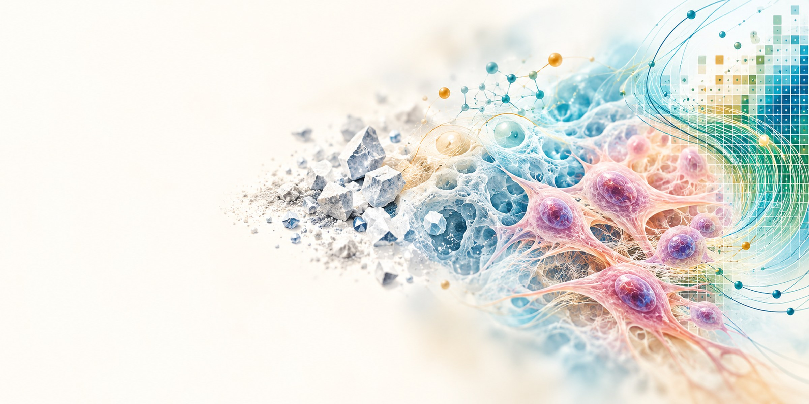

Three awards recognise a shared vision for the dental materials that should exist
Three distinct projects integrate materials science, biology and artificial intelligence to advance how dental biomaterials are designed, developed and biologically evaluated.
In 2026, A/P Vinicius Rosa and PhD candidate Clarice Sabino received three research awards from the International Association for Dental, Oral and Craniofacial Research (IADR) and the Academy of Dental Materials (ADM). Rosa received the IADR Innovation in Oral Care Award, while Sabino received the IADR Southeast Asian Division Hatton Award (Senior Category) and the ADM George C. Paffenbarger Award.
The awards recognised a shared research vision of bringing materials science, biology and artificial intelligence together towards understanding, designing and developing the biomaterials that should exist.
Rethinking how dental materials are developed and evaluated
Developing dental biomaterials requires balancing physical and chemical properties with biological performance. Conventional testing, however, often examines these dimensions separately. Biological safety is commonly assessed using cells grown on flat plastic surfaces and exposed to material extracts, conditions that differ considerably from the three-dimensional environment of living tissues. Evaluating bioactivity, including cellular differentiation and mineralisation, can require weeks of laboratory experiments.
These limitations create opportunities to rethink not only how materials are tested, but also how biological information can guide their development. The three award-winning projects approach this challenge through different strategies, from reproducing more realistic cellular environments to translating biological responses into computational models.
IADR Innovation in Oral Care Award: creating more human-relevant testing environments
A/P Rosa was one of three recipients worldwide of the 2026 IADR Innovation in Oral Care Award, presented by IADR and sponsored by Haleon. The award was announced in March, with recipients recognised at the 104th IADR General Session in San Diego.
His project, AI-Enabled Biomimetic Hydrogels for Biosafety Testing of Dental Materials, investigates how artificial intelligence and biomimetic hydrogels can be combined to develop more predictive platforms for evaluating the biological performance of dental materials.
Unlike conventional two-dimensional cell cultures, hydrogels can provide three-dimensional environments with adjustable mechanical and biochemical properties that approximate aspects of the extracellular matrix. Machine learning can help navigate the complex relationships between hydrogel composition, material properties and cellular responses, supporting both formulation design and experimental interpretation.
The project forms part of Rosa’s broader AI Living Lab research programme, which was featured in The Straits Times in May 2026 for its integration of artificial intelligence and tissue-like experimental models in oral healthcare research.
IADR Hatton Award: making cellular responses measurable and comparable
In September, Clarice Sabino received the IADR Southeast Asian Division Hatton Award in the Senior Category for her project, Digital BioScore: Integrating Materials and Cells for AI-driven Biomaterials Design, presented at the division’s annual meeting in Phnom Penh, Cambodia.
Digital BioScore investigates how the responses of dental pulp stem cells to different dental cements can be translated into quantitative, high-dimensional digital representations. By combining multiple biological measurements into a comparable computational signature, the approach seeks to capture how materials influence cell survival, proliferation, differentiation and mineralisation.
Rather than evaluating biological outcomes as isolated measurements, the project explores how these responses can collectively inform the assessment and future design of dental biomaterials.
The Hatton competition is one of IADR’s long-standing programmes for early-career researchers. Winners of divisional competitions are selected to represent their divisions at the international level.
ADM Paffenbarger Award: predicting the biological performance of calcium silicate cements
Just three weeks later, on 9 October, Sabino received the George C. Paffenbarger Award at the Academy of Dental Materials annual meeting in Tokyo for Novel AI-Driven Hyperdimensional Regenerative Atlas for Screening CSCs Biological Performance, known as HYDRA.
The project focuses on calcium silicate cements, materials widely used in procedures involving living dental tissues. Their biological performance depends on interacting chemical and physical characteristics, including ion release and changes in local pH, which can influence cellular responses and mineralisation.
HYDRA explores an AI-driven strategy for mapping and predicting these biological responses. The research comprises four phases: mapping existing evidence, developing predictive models, constructing the Hyperdimensional Regenerative Atlas and experimentally validating its predictions. The objective is to support the prioritisation of promising material formulations before undertaking prolonged biological experiments.
The team’s published research in Dental Materials provides an example of this predictive approach. Using early pH measurements at three and 24 hours and specimen surface area, a machine-learning model predicted the pH behaviour of calcium silicate cements over 28 days. Laboratory validation demonstrated strong agreement between predictions and experimental measurements, illustrating how material informatics can reduce the need for prolonged testing.
A recognition spanning two generations
The Paffenbarger Award holds particular significance for Rosa and Sabino. In 2007, while a student at the University of São Paulo, Rosa received first place in the same award at the ADM meeting in Fort Lauderdale, Florida, for his research on ion exchange and the mechanical behaviour of dental porcelain.
Nineteen years later, his PhD student received the award for research applying artificial intelligence to the biological performance of dental materials.
Although the scientific questions and technologies differ, the two recognitions connect successive stages of a research career, from investigating the mechanical behaviour of ceramics to supervising research at the intersection of materials science, biology and computational modelling.
A collaborative research direction
Sabino’s Digital BioScore and HYDRA projects were developed under Rosa’s supervision at the NUS Faculty of Dentistry, in collaboration with Prof Nick Silikas from the University of Manchester and Anastasiia Grymak from the University of Otago.
While the three recognised projects remain independent, they contribute to a broader effort to connect material composition and properties with biological responses, using experimental and computational approaches to inform biomaterials development.
The next milestone will come in 2027, when Sabino represents the Southeast Asian Division at the international IADR Hatton competition during the IADR General Session.